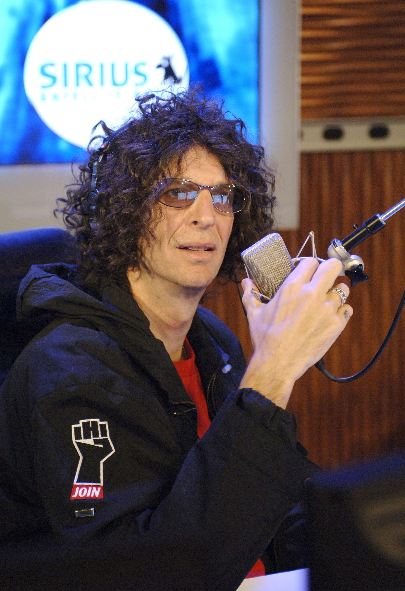

Although the future of radio has been doubted many times throughout its history, it is still in existence. The inherent portability of the medium gives it an advantage over other types of media that require an individual’s full attention, such as television or print. The simplicity of radio has leant itself to a variety of uses.
In recent years, new technologies have promised to expand the reach of radio and to expand the kinds of programming it offers. Satellite and HD radio have increased the amount and diversity of available programming by making more stations available. Internet radio has increased the accessibility of radio communication, and practically anyone who has access to a computer can create subscription podcasts to distribute around the world. These new technologies promise to make radio an enduring, innovative form of media.
In 1998, the FCC awarded licenses to two businesses interested in creating a radio version of cable television—without the cables. This act was the beginning of satellite radioSubscription-based radio broadcast through satellite transmissions., and the companies soon became XM and Sirius. These two networks sold special receivers that could pick up satellite transmissions broadcasting a wide range of formats on different channels to listeners who paid a monthly fee for the commercial-free programming.
Like cable television, satellite radio was not required to censor its disc jockeys or guests for profanity. This attracted somewhat controversial radio personalities known for their conflicts with the FCC, such as Howard Stern and Opie and Anthony. The networks also drew hosts such as NPR’s Bob Edwards and Bruce Springsteen’s guitarist “Little” Steven Van Zandt to create their own shows. Because listeners paid one price for access to all of the channels, disc jockeys experienced less pressure to adhere to the limited playlist style of programming that was the norm for terrestrial radio stations.Bill Breen, “Written in the Stars,” Fast Company, February 1, 2005, http://www.fastcompany.com/magazine/91/open_stars.html. In 2008, Sirius and XM merged to form Sirius XM. In 2010, the company recorded its first profits.Reuters, “Sirius XM Posts Profit, Its First Since Merger, New York Times, February 25, 2010, http://www.nytimes.com/2010/02/26/technology/26radio.html.
Figure 7.9
Talk show host Howard Stern moved his controversial program to satellite radio in 2006, removing himself from FCC censorship rules and helping to popularize the medium.
Developed around 2001 to help terrestrial radio stations compete with emerging satellite radio technology, HD radioDigital transmission of radio signals that allows separate subchannels to be broadcast on the same analog frequency. is essentially a digital transmission of radio signals resulting in less static and better sound quality, even for AM stations. Upgraded quality is not the major benefit of HD radio, however; the technology allows signals to be compressed so that one station can air so-called shadow stations on the same frequency as its regular broadcast. Although listeners need an HD radio to receive these channels, they pay no subscription fee, as independent stations provide their own programming as they deem necessary. David Pogue, “HD Radio Crying Out to Be Heard,” New York Times, April 8, 2009, http://www.nytimes.com/2009/04/09/technology/personaltech/09pogue.html.
Stations such as NPR’s WAMU in Washington, DC, broadcast different types of programming on their shadow channels. For example, the station’s 88.5-1 broadcasts the regular analog schedule of WAMU, while 88.5-2 broadcasts bluegrass and country music programming, and 88.5-3 broadcasts public radio programs not available on the analog version of 88.5.WAMU, “Schedules,” http://wamu.org/programs/schedule/.
HD radio allows current broadcasters to provide content that they would normally put aside in favor of more commercial programs. WAMU’s bluegrass and country shadow station plays content originally played over the airwaves but relegated to the Internet in favor of more marketable programs. The innovation of HD radio allowed the station to reintroduce the programs without risking its financial stability. With this financial freedom, HD radio offers a host of programming possibilities for traditional radio.
Broadcasting is both a strength and limitation of broadcasting. Although technological advances of the past 50 years, such as audio recorders and microphones, have made creating a radio program simple, finding a way to broadcast that program presents difficulties for the average person. The expansion of the Internet, however, has changed this limitation into a manageable hurdle for both businesses and individuals alike.
At its core, Internet radioRadio broadcasts streamed over the Internet. is simply the streaming of audio programs through the medium of the Internet. As early as 1994, radio stations such as Chapel Hill, North Carolina’s WXYC were broadcasting their signal over the Internet, and so potentially gaining a worldwide audience.WXYC, “Simulcast,” http://wxyc.org/about/simulcast. Soon, online-only radio stations were created to broadcast programs. Services such as Live 365, founded in 1999, have acted as distributors for Internet radio programs, charging broadcasters fees to stream their programs to a large listening audience.
Another type of Internet radio service is Pandora radio. This radio website does not distribute existing programs but rather allows users to create their own custom music radio stations. A listener creates a Pandora account and types in a song, composer, or artist, and the service creates a station that plays songs that are similar to the user’s selection. This analysis of music attempts to collect as many details about a song as possible, from lyrics to instrumentation to harmony, and then categorizes songs according to these attributes, making it possible for listeners to customize their own stations based on one or more of the cataloged attributes. The listener can delete unwanted songs from the playlist and create new stations as well. Pandora currently relies on on-screen advertising and has implemented audio advertisements as well.Gabriel Beltrone, “Pandora’s Back,” The Big Money, July 23, 2009, http://www.thebigmoney.com/articles/monetize/2009/07/23/pandora-s-back. Other music services such as Yahoo! Music, AOL Radio, and Jango offer radio stations with multiple programmed genres.
Despite the rise of Internet radio over the past several years, its success has never been a sure thing. As the trend gained momentum, many inexperienced broadcasters confronted the issue of royalties, and many experienced broadcasters encountered new legal issues related to streaming. Stations that broadcast over the airwaves must pay publishing royalties to the musicians and songwriters behind the recordings. Rather than pay an individual musician or songwriter each time a recording is played, however, broadcasters—including radio station, coffee shops, and restaurants—pay for a blanket license that allows them to play any song. As Internet broadcasting grew, musicians and record labels began demanding royalties from Internet stations and specifying new licensing restrictions. For instance, Pandora radio’s license specifies that users can buy a song, but they can’t replay a song without purchasing it, nor can they skip more than six songs per hour.
Other issues arose as terrestrial stations began streaming on the Internet. Since its inception, the medium has struggled with such concerns as whether advertisers should pay for commercials played over the Internet as well as over the air and what types of licenses should be used for Internet radio stations. In time, the federal government mediated an agreement between broadcasters and record companies with the Webcasters Settlement Act of 2009. This legislation designated Internet-only stations as pure-play stations, dividing them according to the types of coverage they offer. Each category pays royalties in different ways, ensuring both fair compensation for artists and the future viability of Internet radio.Chloe Albenesius, “Internet Radio Reaches Deal on Royalty Rates,” PC Magazine, July 7, 2009, http://www.pcmag.com/article2/0,2817,2349813,00.asp.
Unlike Internet radio, podcastingPrerecorded programs that can be downloaded from the Internet. employs downloadable rather than streamed programs. The term podcasting itself stems from the use of MP3 players such as Apple’s iPod to use programs on demand. Many terrestrial stations have employed podcasting to supplement their traditional over-the-air broadcasting. Because these are single programs rather than continuous stations, podcasts are an easier medium to produce than is Internet radio.
Some podcast producers, such as Mignon Fogarty, have created programs that led to book deals and a steady income. Fogarty’s weekly Grammar Girl: Quick and Dirty Tricks podcast focuses on simple grammar rules. Within a year of its inception, this podcast racked up 1 million downloads and received national acclaim.John Faherty, “‘Grammar Girl’ Podcasts Rule Online,” USA Today, March 8, 2007, http://www.usatoday.com/tech/webguide/internetlife/2007-03-08-grammar-girl_N.htm. Nevertheless, podcasting does not fit neatly into the traditional concept of radio. Yet, there is no question that it is following in the footsteps of past radio programs, and that it provides a potential vision of the medium’s place in years to come. Just as radio evolved from a medium for soap operas and live music to talk shows and recorded music, podcasts are a window into what radio may evolve into in the future.
Please respond to the following writing prompts. Each response should be a minimum of one paragraph.
Review Questions
Questions for Section 7.1 "Evolution of Radio Broadcasting"
Questions for Section 7.2 "Radio Station Formats"
Questions for Section 7.3 "Radio’s Impact on Culture"
Questions for Section 7.4 "Radio’s New Future"
New technologies in radio have created new radio career possibilities. As podcasting, Internet radio, satellite radio, and HD radio have fueled demand for new content, opportunities have emerged for self-starters to create and host their own radio programs or become freelance radio journalists.
Consider some of the uses for podcasting and radio journalism. Some useful links for researching careers in these areas, among others you may find through your own research, are http://transom.org/ and (http://www.airmedia.org/. Based on your research and ideas, identify a career field in online radio that you may wish to pursue. Think about ways that people in this career field have employed radio. Now answer the following questions: